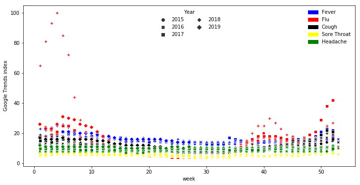

A Forecast a day keeps the Doctor away - Predicting Influenza Rates
Tue, Sep 24, 2019
13-minute read
The aim of the project is to predict disease rates, more precisely influenza-like illnesses rates (ILI rates). On the one hand historical time series data were used, on the other hand the data basis was extended by Google Trends data. According to Google News Lab these data are
“normalized Trends data. This means that when we look at search interest over time for a topic, we’re looking at that interest as a proportion of all searches on all topics on Google at that time and location”.
The data is indexed to 100, where 100 is the maximum search interest for the time and location selected. The idea was that people may google typical flu symptoms at the onset of a cold or flu even before the disease fully manifests itself. The explanatory variables for the ILI rates were therefore defined as a combination of keywords containing such typical symptoms of influenza.
1. Data acquisition and engineering
Initially, it was planned to carry out the project on the basis of data for Germany. However, due to the lack of freely accessible influenza data, we decided to do the project for the USA. The ILI rates could be obtained using the R Package cdcfluview and its ilinet function. This function retrieves data from the CDC FluView Portal containing, inter alia, in-season and past seasons’ national, regional, and state-level outpatient illness surveillance data from ILINet (Influenza-like Illness Surveillance Network).
The Google Trends data were obtained using Python’s pytrends, an unofficial pseudo API for extracting Google Trends data. As a combination of keywords, the following typical symptoms were identified:
- fever
- flu
- cough
- sore throat
- headache
For this project data was used ranging from the beginning of 2015 until July 2019, so over approximately four and a half years. Since ILI rates are reported on a weekly basis, also Google Trends data on a weekly basis were used. Therefore the data amounts to around 230 data points.
def get_usdata(kw_list):
"""takes keyword list as input and returns DataFrame
containing ili rates for the state and Google Trends
data for the keywords"""
# ili data
us_ili = pd.read_csv("ili_national_level.csv", header=0)
us_ili["date"] = pd.to_datetime(us_ili.week.astype(str) + \
us_ili.year.astype(str).add("-0"),
format="%W%Y-%w")
us_ili.set_index("date", inplace=True)
ili = us_ili.shift(-1, freq='W')
# Google Trends
pytrends = TrendReq(hl='en-US', tz=360)
pytrends.build_payload(kw_list, cat=0, timeframe="2015-01-11 2019-07-07",
geo="US")
trends = pytrends.interest_over_time()
trends = trends.drop("isPartial", axis=1)
# merge the dataframes on the Datetimeindex
merged = trends.join(ili)
merged["unweighted_ili"] = merged["unweighted_ili"].interpolate(method="linear")
merged = merged.drop(merged.tail(4).index, inplace=False)
merged = merged.asfreq("W")
merged = merged.drop(['Unnamed: 0', 'region_type', 'region', 'year', 'week',
'weighted_ili','age_0_4', 'age_25_49', 'age_25_64',
'age_5_24', 'age_50_64', 'age_65', 'ilitotal',
'num_of_providers', 'total_patients', 'week_start'],
axis=1)
return merged
2. Exploratory data analysis
2.1 ILI Rates
Before starting the modeling process and forecasting, there was a brief exploratory data analysis of our target variable, the ILI rates, as a first step. Therefore, the first step was to load the data into a Pandas dataframe and to construct a datetime index using the week number and year variables, on which later on the ili rates dataframe and the dataframe containing the google Trends data were merged.
Then the ILI rate time series were plotted to get a first intuition and feeling for the data.
From the above plot one can see that the rates are the lowest in the middle of each year in the summer months. From the late summer months on they start to rise. During the autumn this rise is pretty modest, however, as winter comes closer the increase in ILI rates becomes much more drastically at the end of a year and in the beginning of the following year. The rates typically peak in late January or February each year, before they start to decrease again until the middle of the year.
Although the level of ILI rates changes during the observed period, the plot displays qualitatively a very similar picture for each year with the typical characteristics described before. Therefore, there is strong (yearly) seasonality in our data which has to be considered when modeling and forecasting. This seasonality can also be seen quite well when plotting the ILI rates against the calendar weeks (see plot below): the rates are almost identical in the middle of the year from around the 15th to the 50th week in all years. Only in the weeks during which the influenza rates peak there are differences in the level of the rates, but the typical course is constant over all years.
2.2 Google Trends
In the next step the Google Trends data was analyzed. As explained in the introduction of this notebook, the keywords used for this project are a combination of typical symptoms of a flu or influenza. The identified keywords used in this project are:
- fever
- flu
- cough
- sore throat
- headache
The data was aquired using the Python package Pytrends. Firstly, the data was loaded into a pandas dataframe and then plotted just as before with the ILI rates data.
Although a bit messy due to the many curves, the first of the plots shown above pictures qualitatively a very similar picture to the plot showing the course of ILI rates over the years. The search volume for the chosen keywords is the lowest during summer months and the middle of each year. From then on it rises until it reaches its peak around February. This is most evident for the keywords fever, flu and cough as can be seen in the second plot above.
Using the same way of displaying the relationship between calendar weeks and the respective Google Trends index as for the relationship between ILI rates and calendar weeks before, a very similar picture emerges, though not as clear as before: the search volume for typical flu and influenza symptoms is lowest during the summer months, increases slowly during autumn, more rapidly during winter months and peaks around February.


2.3 Both: ILI Rates and Google Trends
Plotting both ILI rates and Google Trends data together in a single graph shows that the two curves seem to run pretty much together and follow the same course.
This first graphical intuition of the time series more or less running together can also be tested more rigorously using the correlation coefficient between the search volume of each keyword and the ILI rates. Displaying the correlation matrix between all variables confirms our first intuition. There is a high correlation between the Google Trends data and the ILI rates for most of the keywords. Especially for the keywords fever, flu and cough there is a very high correlation coefficient of around 0.912, 0.840 and 0.848, respectively, showing that these time series are highly correlated. The correlation coefficient for sore throat is still pretty high (0.730), for headache substantially lower (0.458). There is also high correlation between some of the keywords, e.g. between cough and sore throat (0.875). However, we are still going to keep all of the keywords as explanatory variables.
| fever | flu | cough | sore throat | headache | unweighted_ili | |
|---|---|---|---|---|---|---|
| fever | 1.000000 | 0.763863 | 0.817337 | 0.760097 | 0.526859 | 0.919887 |
| flu | 0.763863 | 1.000000 | 0.698055 | 0.529569 | 0.499043 | 0.841872 |
| cough | 0.817337 | 0.698055 | 1.000000 | 0.869852 | 0.527671 | 0.855295 |
| sore throat | 0.760097 | 0.529569 | 0.869852 | 1.000000 | 0.504152 | 0.729051 |
| headache | 0.526859 | 0.499043 | 0.527671 | 0.504152 | 1.000000 | 0.448145 |
| unweighted_ili | 0.919887 | 0.841872 | 0.855295 | 0.729051 | 0.448145 | 1.000000 |
Since our goal is to predict future ILI rates using the Google Trends data, a high correlation between Google Trends and ILI rates from the same period is not what we are really interested in. The more interesting question for this application is if there is a substantially high relationship between Google Trends data and future ILI rates. To test this, the Google Trends data are shifted one period into the future, such that these data correspond to the one-week-ahead ILI rates in the DataFrame.
Looking at the correlation coefficients of the lagged Google Trends data and the ILI Rates it can be seen that the correlation is almost as high as for the non-lagged data. The correlation coefficient between ILI Rates (and lagged) Fever is a bit lower (0.885 vs. 0.913), the ones between ILI Rates and (lagged) Flu (0.840 vs. 0.840), (lagged) sore throat (0.732 vs. 0.731) and (lagged) headache (0.461 vs. 0.458) remain mostly unchanged and the correlation between ILI Rates and lagged search volume for cough even increased slightly (0.867 vs. 0.848). This high correlation between ILI rates and the lagged Google Trends data suggests that it may be well possible to predict ILI rates using the given index data.
| fever | flu | cough | sore throat | headache | unweighted_ili | |
|---|---|---|---|---|---|---|
| fever | 1.000000 | 0.763863 | 0.817337 | 0.760097 | 0.526859 | 0.894615 |
| flu | 0.763863 | 1.000000 | 0.698055 | 0.529569 | 0.499043 | 0.840828 |
| cough | 0.817337 | 0.698055 | 1.000000 | 0.869852 | 0.527671 | 0.873549 |
| sore throat | 0.760097 | 0.529569 | 0.869852 | 1.000000 | 0.504152 | 0.719603 |
| headache | 0.526859 | 0.499043 | 0.527671 | 0.504152 | 1.000000 | 0.448614 |
| unweighted_ili | 0.894615 | 0.840828 | 0.873549 | 0.719603 | 0.448614 | 1.000000 |
3. Forecasting and model evaluation
After cleaning the data, getting it into the right format, i.e. a single dataframe containing both ILI rates and Google Trends index data merged on a datetime index, the models to forecast the data were created and compared on their prediction accuracy. For comparison and evaluation the Root Mean Squared Error (RMSE) metric was used. This metric takes the difference between the forecasted datapoint and the actual value (i.e. the residual) and squares it, does this for each single datapoint, averages the squared residuals and takes the square root of this average. Thus, the RMSE can be written as:
$$\text{RMSE} = \sqrt{\frac{1}{n} \sum_{i=1}^{n} (y_i - \hat{y_i})^2}$$
In comparison to other common evaluation metrics which can be used for regression or forecasting tasks, as for example the Absolute Mean Error (MAE), the RMSE gives relatively high weight to large errors since the errors are squared before they are averaged and thus these are penalized more. However, in contrast to the MAE, the RMSE cannot be interpreted as nicely.
Before using the Google Trends data to forecast ILI rates two classical univariate forecasting methods were used: a model of the ARMA model class and Holt-Winter’s Triple Exponential Smoothing method.
def rmse(testdf, preddf):
return np.sqrt(mean_squared_error(testdf, preddf))
3.1 Univariate Forecasting
3.1.1 auto.arima
The first class of models fit to the data and used to make predictions is the class of Auto Regressive Moving Average (ARMA) models. Such a model has got many different parameters that have to be chosen before fitting the model to get decent results. To avoid choosing all of those parameters in advance, the Python package pmdarima and its auto_arima() function were used. This function grid searches through a combination of parameters and chooses the model which minimizes some information criteria (the Akaike Information Criterion (AIC) and the Bayesian Information Criterion (BIC)).
The only parameter that has to be known and set before running the function is the order of seasonality $m$. As we saw earlier in Chapter 3.1 of this Notebook, the data exhibits very strong and clear seasonality, which repeats on a yearly cycle. Since the data is on a weekly basis, one seasonal cycles corresponds to 52 weeks, and therefore $m=52$ was chosen before running auto_arima().
# fitting the model
arima = pm.auto_arima(train, start_p=1, start_q=1, m=52, seasonal=True,
trace=1, error_action="ignore", suppress_warnings=True)
Running the auto_arima() function, the model chosen corresponds to a seasonal ARMA model without differencing (which can be done to ensure stationarity of a time series), i.e. a SARMA model. In the next step, we initialized an empty list, in which the predictions are stored. We first make a one-period-ahead forecast, save the forecast in the forecasts list, update our model using the actual value of the just forecasted period and then use the updated model to predict the next period. This is done for all timepoints in our test dataset.
# one-period-ahead forecast and updating model parameters after each prediction
model = arima
arima_pred = []
for new_ob in test:
fc = model.predict(n_periods=1)[0]
arima_pred.append(fc)
# updates existing model with a small number of MLE steps
model.update(new_ob, suppress_warnings=True)
In the graph below the actual and the predicted ILI Rates are plotted against the timepoints. This graph can be used to evaluate the performance of our prediction. At a first glance, the prediction looks very close to the actual values. This first graphical intuition is also confirmed using the RMSE criterion. Our forecast yields a RMSE of 0.251 as can also be seen from the plot.
3.1.2 Holt-Winters’ seasonal method
After trying the ARMA class models, another univariate model to make the forecasts was used, namely the Triple Exponential Smoothing method, also known as Holt-Winters model. This model can be used for time series data which exhibit seasonalities to make forecasts and is another classical and commonly used model for time series prediction and is thus also used here. In the same manner as before, a one-step-ahead forecast is produced, the model is updated using the actual value for the forecasted period and then the ILI rate for the next period is predicted.
holt = ExponentialSmoothing(train, trend=None, seasonal="add",
seasonal_periods=52)
holt_fit = holt.fit(optimized=True)
i = 0
holt_pred = pd.DataFrame(test)
for new_ob in test:
fc = holt_fit.predict(start=test.index[i], end=test.index[i])
holt_pred[i] = fc
# add test obs to train df
train[test.index[i]] = test.values[i]
holt = ExponentialSmoothing(train, trend=None, seasonal="add",
seasonal_periods=52)
holt_fit = holt.fit(optimized=True)
# increasing i
i = i+1
The same way of graphical evaluation and quantitative evaluation using the RMSE was used as with the SARMA model. The Holt-Winters prediction seems to be as close to the actual test values as the SARMA model for the first few periods and also for the decline after the rates have peaked. However, the model does not capture the drop on the way to the peak and in addition to that the prediction seems to be too low for the period between the drop and the peak. The RMSE amounts to around 0.420 and therefore confirms that the Holt-Winters model performs worse than the SARMA model used before.
3.2 Multivariate Forecasting: XGBoost
Since the goal was to forecast ILI rates using Google search volumes for typical influenza and flu symptoms, in addition to the historical time series data of ILI rates themselves the Google Trends index data described in 3.2 were used as well. The algorithm used was the XGBoost regression model. XGBoost is a tree-based machine learning algorithm using boosted trees. It is very efficient, needs relatively low computing time, is able to handle missing values and uses regularization to avoid overfitting (for more details see for example the XGBoost documentation).
To get the dataframe into the desired format, at first the Google Trends data were shifted one period into the future, such that this week’s Google Trends index data correspond to next week’s ILI rates. Before training the XGBoost model, there are some hyperparameters which have to be set in advance. Since XGBoost tends to work very well without much tuning or adjustment, only two hyperparameters were changed: first, it was found that a value of 1 for the learning rate works best for the problem at hand, while typically smaller numbers between 0.01 and 0.3 tend to work well; and second, we increased the maximum depth of a single tree to allow for a higher flexibility. The remaining parameters were kept as set by default.
# train XGBoost regression model and make predictions
dtrain = xgb.DMatrix(train, label=train["unweighted_ili"])
dtest = xgb.DMatrix(test, label=test["unweighted_ili"])
param = {'max_depth':10, 'eta':1, 'objective':'reg:squarederror' }
num_round = 5
bst = xgb.train(param, dtrain, num_round)
xgb_pred = bst.predict(dtest)
The plotted prediction looks very close to the actual test values. Even the two drops are captured well, especially compared to the Holt-Winters model used before. The RMSE is also very low with around only 0.116.
4. Model comparison and conclusion
Using univariate forecasting methods, the SARMA model outperformed the Holt-Winters model, however, both models yielded a pretty precise estimate of one-period-ahead ILI rates forecasts. A more modern Machine Learning approach, using the XGBoost algorithm with Google Trends index data of typical flu and influenza symptoms as explanatory variables instead of historical ILI rates themselves as input to the model, performed even better than the already very precise SARMA model and thus also better than the Holt-Winters method. The graph below plots the actual and predicted ILI rates against the timepoints for all 3 models and their RMSE for a direct comparison.
To sum up, both (classical) univariate and multivariate (machine learning) forecasting methods gave very precise and accurate results for a forecasting horizon of one period. However, the XGBoost [RMSE: 0.116] outperforms the SARMA model [RMSE: 0.251] as well as the Holt-Winters’ Triple Exponential Smoothing model [RMSE: 0.420].